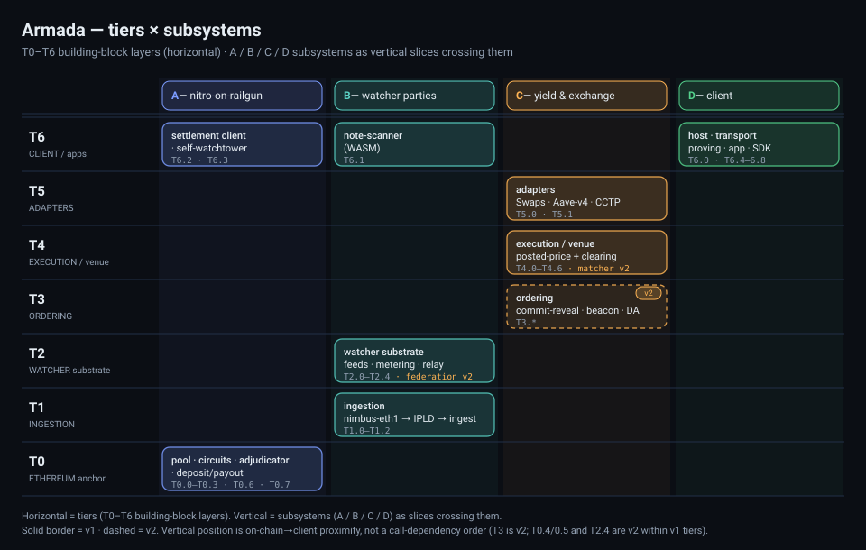

This section gives the static decomposition of the system. Level 1 is the seven tiers (T0–T6) — horizontal building-block layers running from the on-chain anchor up to the client — and each tier's whitebox detail lives in its own doc (T0-ethereum-anchor.md … T6-client-apps.md). The four subsystems — work packages A/B/C/D (§0) — are the vertical slices: each owns T#.# items across several tiers and consumes the rest across ICDs. Tiers and subsystems are two axes over one item set — the familiar layered view with feature slices crossing it — and the item registry below is the single model of record, every buildable item carrying one T#.# id with its status and release facets. (The "lines" of §4/§8 are a third grouping of those same items.)
Level 1 — the tier stack
tier building blocks owner release
------------------------------------------------------------------------------------------
T6 CLIENT / apps wallet · light client · self-watchtower · SDK A·B·D v1
T5 ADAPTERS Swaps · Aave-v4 yield · CCTP C v1
T4 EXECUTION / venue posted-price venue + clearing C v1 (matcher v2)
T3 ORDERING commit-reveal + beacon · epoch set-agreement · DA C v2
T2 WATCHER substrate proof-carrying feeds · metering · relay B v1 (federation v2)
T1 INGESTION nimbus-eth1 state-diff → IPLD → watcher ingest B v1
T0 ETHEREUM anchor pool · circuits · adjudicator · deposit/payout A v1 (econ-security v2)
Read this as a layered building-block view: the tiers are horizontal layers, and the subsystems (A/B/C/D) are vertical slices that cross them — the standard shape of a layered architecture with feature slices. The owner column is each tier's primary subsystem; T6 is shared (A owns the settlement client and watchtower, B the note-scanner, D the host, transport, proving, and app). Vertical position is on-chain-to-client proximity and release marks v1/v2 phasing; neither is a strict call-dependency order — for example the ordering tier (T3) is v2-only, and some v2 items (T0.4/T0.5 economic-security, T2.4 federation) light up later inside otherwise-v1 tiers.

Tier
Responsibility
Owner(s)
Whitebox
T0 Ethereum anchor
On-chain pool, adjudicator, the deposit/payout settlement boundary, trusted setup, economic-security contracts
Generated from engineering/05-building-block-view.md by tools/render-engineering.sh — do not hand-edit. Internal Google Docs require Laconic/Vulcanize access.